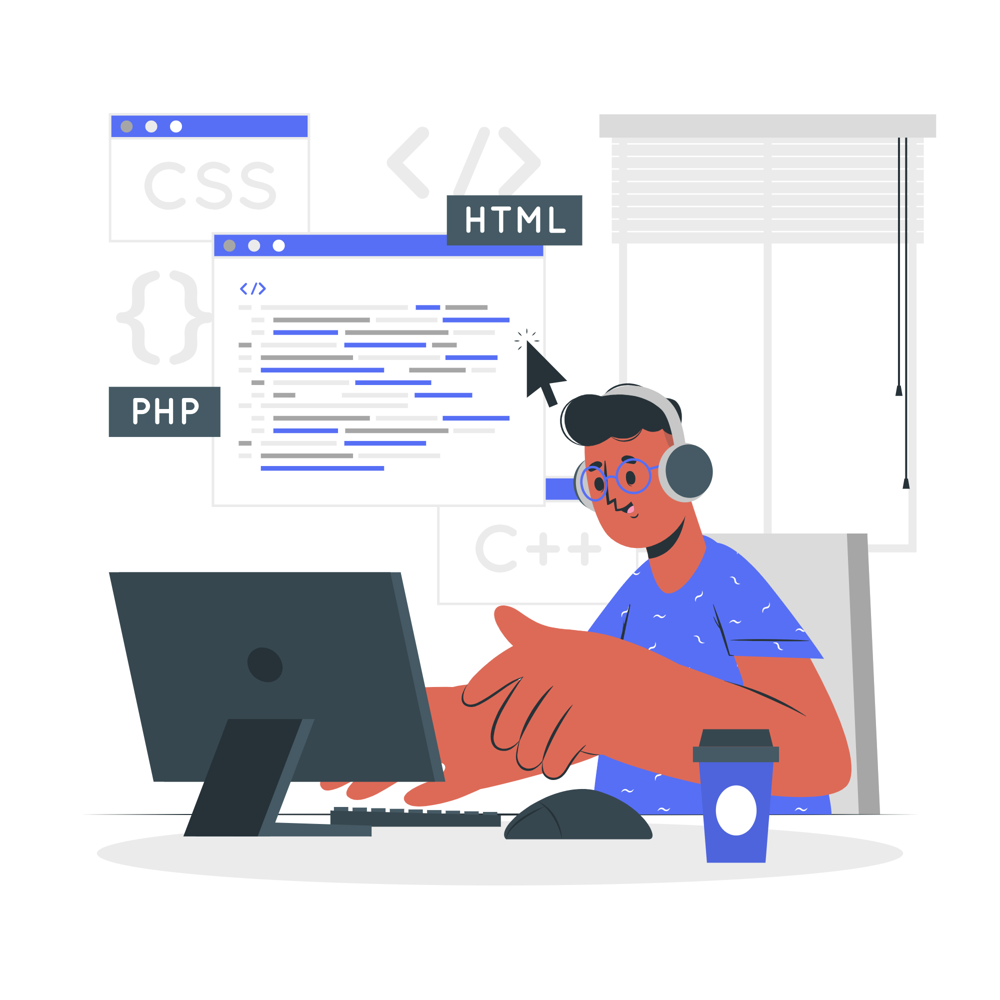

My name is Ghure Mohd Umar, I am a young Web Developer. I am pursuing my bachelors of engineering in
electronics and telecommunication at Thadomal Shahani Engineering College (TSEC) at Bandra west Mumbai.
Thadomal Shahani Engineering College (TSEC) is a private engineering college in Mumbai, India. Founded in 1983,
it is the first and the oldest private engineering institute affiliated with the University of Mumbai.
TSEC was founded by the Hyderabad (Sind) National Collegiate Board (HSNC Board) in the year 1983.
It is named after one of Mumbai's most respected philanthropists, Dada Kishinchand T. Shahani's father, Thadomal Shahani.
Currently I am in my 4th year with CGPI of 9.18.Even though my field is more inclined towards
electronics and telecommunication related topics and concepts which I find very interesting and I know very well...
but Web development is the area which always inspired me and I am very keen to excel this field.
As the glow of the computer screen illuminates my face, a spark of excitement dances in my eyes.
With each line of code I meticulously craft, a sense of accomplishment surges through my veins.
The world of web development has captivated me in a way nothing else ever has. It's the perfect blend of creativity and logic, where I can turn a blank canvas into a virtual masterpiece.
I find solace in the rhythmic keystrokes, as if I'm typing my dreams into existence. From designing sleek user interfaces to weaving complex functionalities, I revel in the power to shape the digital realm.
The web becomes my playground, a realm where I can bring ideas to life, connect people, and leave my mark on the ever-evolving landscape of technology.
With each project I undertake, I discover new possibilities and push the boundaries of my own capabilities, fueled by an insatiable curiosity and an unwavering passion for web development.
